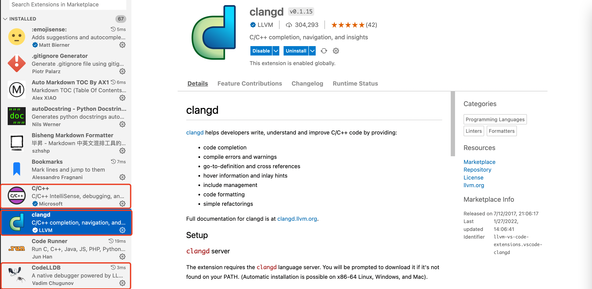

搭建 C++ 轻量级编写环境（VSCode）
Contents
搭建 C++ 轻量级编写环境（VSCode）¶
1. clangd¶
在安装 VSCode 扩展之前，强烈保证系统内安装有 clangd，新版 macOS 已经内置，对于没有 clangd 的
macOS/Linux 用户
brew install llvm
Windows 用户
scoop install clangd
2. 安装并扩展¶
在 VSCode 扩展商店，搜索并安装如下三个扩展

安装完毕后，”ctrl”+”, ” 进入配置，点击右上角的图标，打开配置的 json 文件
加入如下 3 段配置
2.1. C/C++¶
官方的 C/C++ 扩展主要提供基础支持，虽然主要方面都有所欠缺，但考虑到其功能相对全面，依然是必需
基本配置如下
记住一定要关闭默认的 IntelliSense，否则会与 clangd 冲突
{
"C_Cpp.default.compilerArgs": [
"-g",
"${file}",
"-std=c++20",
"-o",
"${fileDirname}/${fileBasenameNoExtension}"
],
"C_Cpp.default.cppStandard": "c++20",
"C_Cpp.autocompleteAddParentheses": true,
"C_Cpp.clang_format_fallbackStyle": "LLVM",
"C_Cpp.clang_format_sortIncludes": true,
"C_Cpp.intelliSenseEngine": "Disabled"
}
2.2. clangd¶
clangd 扩展由 LLVM 团队维护，提供了非常智能的补全，和代码格式化，以及语法检查。这个扩展的出现让很多人对 VSCode 下的 C/C++ 的观感大大改善，直白地说没有 clangd，VSCode 的 C/C++ 就是个玩具。
关于 clangd 的详细介绍，相见其官网 clangd
基本配置如下
{
"clangd.checkUpdates": true,
"clangd.arguments": [
"--all-scopes-completion",
"--background-index",
"--clang-tidy-checks=cppcoreguidelines-*,performance-*,bugprone-*,portability-*,modernize-*",
"--clang-tidy",
"--compile-commands-dir=build",
"--completion-style=detailed",
"--function-arg-placeholders=false",
"--header-insertion-decorators",
"--header-insertion=iwyu",
"--log=verbose",
"--pch-storage=memory",
"-j=12"
]
}
2.3. CodeLLDB¶
虽然，官方 C/C++ 扩展也提供基于 LLDB 的 debug 功能，但是对于很多 C++ 场景还是太弱了，CodeLLDB 在很大程度上弥补了这个缺陷。同时，这个扩展也支持 Rust 的 debug
基本配置如下
{
"lldb.commandCompletions": true,
"lldb.dereferencePointers": true,
"lldb.evaluateForHovers": true,
"lldb.launch.expressions": "simple",
"lldb.launch.terminal": "integrated",
"lldb.showDisassembly": "never",
"lldb.verboseLogging": true
}
3. 快捷编译¶
提到快捷编译，必然首选 CodeRunner，其相关配置如下
对 macOS 用户
Intel macOS 用户也可以选择 gcc，gcc 目前不支持 arm64
{
"code-runner.runInTerminal": true,
"code-runner.executorMap": {
"c": "clang $dir$fileName -o $dir$fileNameWithoutExt && $dir$fileNameWithoutExt",
"cpp": "clang++ -std=c++20 $dir$fileName -o $dir$fileNameWithoutExt && $dir$fileNameWithoutExt",
"rust": "rustc $dir$fileName && $dir$fileNameWithoutExt"
},
"code-runner.fileDirectoryAsCwd": true
}
对 Linux 以及 Windows 用户
{
"code-runner.runInTerminal": true,
"code-runner.executorMap": {
"c": "gcc $dir$fileName -o $dir$fileNameWithoutExt && $dir$fileNameWithoutExt",
"cpp": "gcc++ -std=c++20 $dir$fileName -o $dir$fileNameWithoutExt && $dir$fileNameWithoutExt",
"rust": "rustc $dir$fileName && $dir$fileNameWithoutExt"
},
"code-runner.fileDirectoryAsCwd": true
}